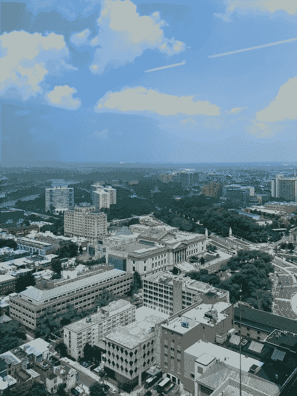

Last updated: Mon Jul 31 2023 | Permalink | RSS
Gray buildings amongst green trees under a blue sky. A dithered pixel-art of a view of Fairmount, The Art Museum, the Schuylkill River, and the ridges beyond.
I have been arguing with myself for a while now about getting back into content creation for the
past few years. I have started and abandoned moved on from so many projects over the years. None of them necessarily "gained traction", but I also
never gave things enough time to really find their audience. I've been consistently thinking for a year now that
I did enjoy making those things at the time and probably would again.
Theoretically this is the "right reason" to be creating content: Just feeling a drive to make things. However, I really despise the phrase/title content creator for both its hand-wavey vagueness and especially the implication that one is not a filmmaker or an illustrator or a writer but a machine akin to a meat grinder whose main output is "stuff". This is especially shakey ground to even acknowledge considering AI generated content.
But I suppose I am considering making intentional, scheduled work again. And while I am not quitting my day job (certainly not in week 3), I do have an interest in trying to grow an audience and add some commerce to the art. And thats where I start to get nervous: When I have started to treat making things for fun as a job they have gotten less fun. Specifically resenting time pressure, feeling like I have to make a thing or else, and that the things I am making are just not good. Often I felt like the "just to get it done" factor was hurting how I felt about making things.
Granted, I say all that and yet: I was always far happier having made the thing and seeing it posted than I ever was not posting the things that didn't make it. I genuinely enjoy the act of editing a video, hand-placing a pixel, and writing a blog post. Making things is fun, and as long as it stays fun I'll be happy to make things. If I can continue to make things that make me happy and make some income from it without feeling burned out by it, then that would be genuinely dreamy.
This is not an announcement of anything in particular. I don't have a specific plan right now, but I suppose keep an ear out because I'll be making something soon. Which of course reminds me to remind you that you can get this blog delivered to you automatically by subscribing to the RSS feed I maintain for this website!
So definitely no promises, but lately I have been interested in:
- making code tutorials at an intermediate level for both small projects and language proficiencies
- writing articles about better documentation and project/code organizing
- posting about current projects I'm working on in a journal blog style
Thank you for reading! Please consider supporting this blog.